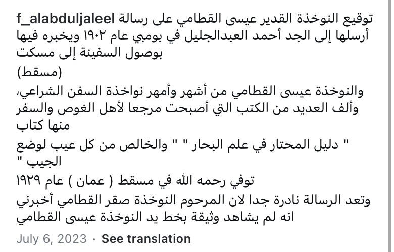

١٩٠٢ · رسالة موقعة، نشرتها عائلة العبدالجليل
توقيع النوخذة عيسى القطامي على رسالته إلى بومبي سنة ١٩٠٢
ما هي
رسالة أرسلها عيسى سنة ١٩٠٢ إلى التاجر أحمد العبدالجليل في بومبي يخبره فيها بوصول السفينة إلى مسقط. احتفظت عائلة العبدالجليل بالرسالة ونشرت توقيعه: «عيسى بن عبدالوهاب قطامي».
أهميتها
هي أقدم ما لدينا بخط يد عيسى نفسه، وكان عمره نحو اثنين وثلاثين عاما ويسافر إلى الهند ومسقط. وتذكر العائلة التي احتفظت بها أن النوخذة صقر القطامي أخبرهم أنه لم يشاهد وثيقة بخط يد عيسى من قبل.
من المقصود
يوقع باسمه الكامل عيسى بن عبدالوهاب قطامي، ويذكر التعليق كتبه ووفاته في مسقط سنة ١٩٢٩، وهذا يطابق عيسى تماما.
صور الصفحات


النص الأصلي
ملاحظات
لم يُنشر إلا التوقيع وليس الرسالة كاملة، والتاريخ والمضمون من تعليق عائلة العبدالجليل.
أسماء أخرى
المصادر
حساب f_alabduljaleel على إنستغرام، ٦ يوليو ٢٠٢٣. ونسخة محفوظة في درايف العائلة.
كيف كُتب هذا النص: الترجمة الإنجليزية من Claude، يرجى مراجعتها.
افتح في الموقع التفاعلي